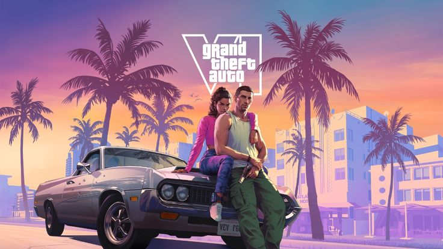
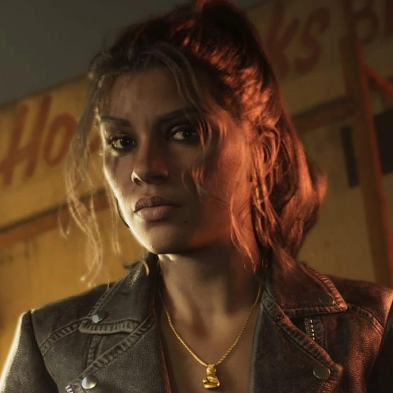
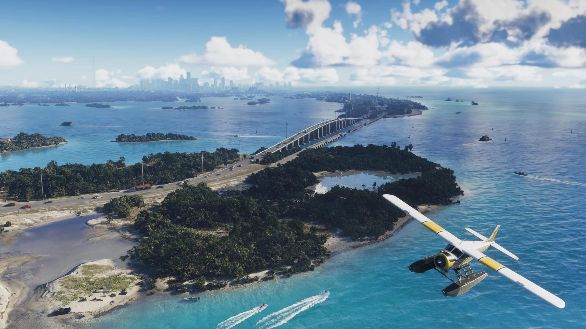

Jason Duval
Jason vive em Leonida e está envolvido com atividades criminosas. Ao lado de Lucia, participa de uma jornada marcada por riscos, oportunidades e conflitos.
Grand Theft Auto VI é um jogo eletrônico de ação-aventura para um jogador, ambientado em um mundo aberto, que pode ser jogado em terceira pessoa como Jason Duval ou Lucia Caminos.
Conhecer o jogo →
Conheça os principais dados de Grand Theft Auto VI.
Ambientado no estado fictício de Leonida, baseado na Flórida, o jogo seguirá a história da dupla criminosa Lucia Caminos e Jason Duval. Os jogadores poderão explorar livremente o mundo aberto de Leonida, que inclui a cidade de Vice City, inspirada em Miami.
Conheça a jornada de Lucia e Jason e os acontecimentos que envolvem o estado de Leonida.
Conheça os personagens que fazem parte da história do jogo.
Jason vive em Leonida e está envolvido com atividades criminosas. Ao lado de Lucia, participa de uma jornada marcada por riscos, oportunidades e conflitos.

Lucia é uma das protagonistas da história. Determinada a construir uma nova vida, ela se envolve em uma jornada criminosa ao lado de Jason.
Explore os diferentes ambientes que compõem o mundo de Grand Theft Auto VI.
Uma grande cidade inspirada em Miami, conhecida por suas praias, arquitetura, vida urbana e iluminação característica.

O estado fictício que abriga diferentes cidades, paisagens naturais e comunidades exploráveis durante a aventura.
Descubra detalhes interessantes sobre o desenvolvimento, a música e os segredos do jogo.
GTA VI apresenta uma nova versão de Vice City, cidade que já apareceu em outros títulos da franquia e que agora faz parte de um mundo muito mais amplo.
A aventura acontece em Leonida, um estado fictício inspirado na Flórida. O território reúne diferentes ambientes, cidades e paisagens.
Jason Duval e Lucia Caminos dividem o protagonismo da história. A relação entre os dois é fundamental para o desenvolvimento da narrativa.
A ambientação apresenta praias, áreas urbanas, regiões naturais e diferentes paisagens inspiradas no estado norte-americano da Flórida.
A música possui papel importante na identidade de GTA VI, com estações de rádio, trilha sonora e composições que ajudam a construir a atmosfera de Leonida.
Grand Theft Auto VI representa uma nova etapa para uma das franquias mais conhecidas da história dos videogames. Desenvolvido pela Rockstar Games, o título dá continuidade à série principal após o sucesso de Grand Theft Auto V.
O retorno a Vice City, agora integrada ao estado fictício de Leonida, apresenta uma nova interpretação de um cenário conhecido pelos fãs. A proposta amplia o universo da franquia e apresenta novos personagens, ambientes e acontecimentos.
Outro aspecto importante é a história protagonizada por Jason Duval e Lucia Caminos. A presença de dois protagonistas coloca a relação entre os personagens no centro da narrativa, oferecendo uma nova perspectiva para a experiência.
Com lançamento previsto para novembro de 2026, GTA VI representa uma das produções mais aguardadas da Rockstar. Sua chegada marca um novo capítulo para a franquia, despertando expectativas sobre a evolução dos mundos abertos e das experiências narrativas nos videogames.
Informações gerais sobre Grand Theft Auto VI, sua ambientação, história e materiais promocionais.
Acessar fonte oficialInformações oficiais sobre Jason Duval, Lucia Caminos e os demais personagens apresentados no jogo.
Conhecer os personagensDados técnicos, desenvolvedora, plataformas e informações oficiais sobre o lançamento.
Consultar informaçõesAs imagens utilizadas na página devem receber os créditos de seus respectivos autores e fontes. As artes oficiais são disponibilizadas pela Rockstar Games.
Consultar galeria oficial